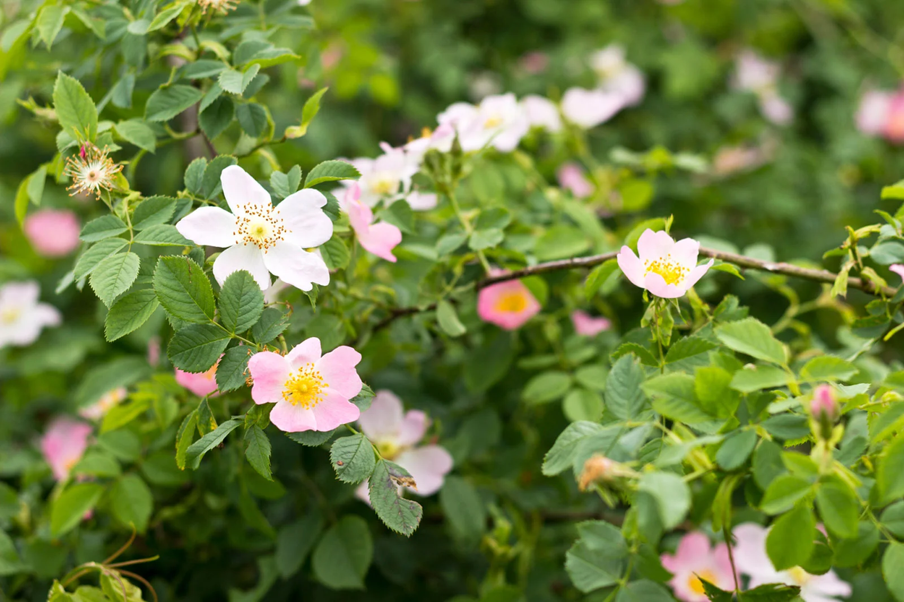
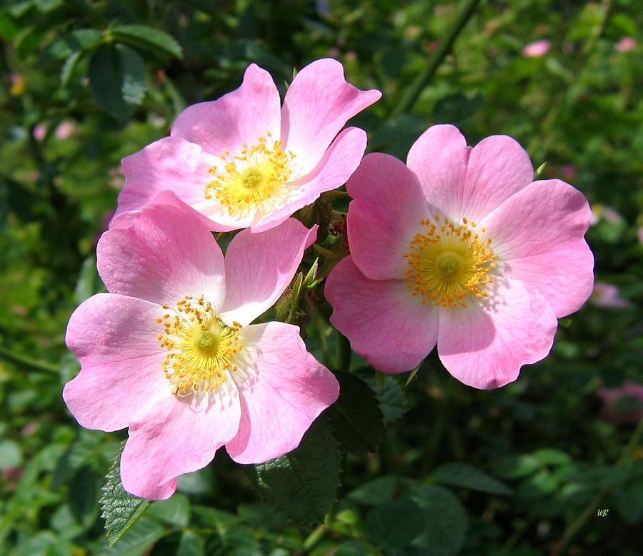

Wild Rose (Rosa spp.)
ḵál̓ḵay


Planting
Wild Rose is a versatile flowering shrub that can grow in various soil types. Here's how to plant wild rose:
- Choose a location with full sun to partial shade.
- Prepare the soil by removing weeds and adding organic matter.
- Dig a hole slightly larger than the root ball and place the plant in the hole.
- Backfill the hole with soil, firming it gently around the roots.
- Water the plant thoroughly after planting and keep the soil consistently moist.
Usage
Wild Rose has aesthetic and ecological uses:
- The flowers of wild rose add beauty and fragrance to gardens and landscapes.
- The plant is often used in hedgerows and for erosion control.
- Wild Rose provides food and habitat for birds, bees, and butterflies.
Environmental Impact
Wild Rose contributes to the ecosystem in the following ways:
- The shrub attracts pollinators, promoting the health of other plants in the area.
- Wild Rose helps stabilize soil and prevent erosion in riparian areas.
- The plant contributes to the overall biodiversity of the habitat.